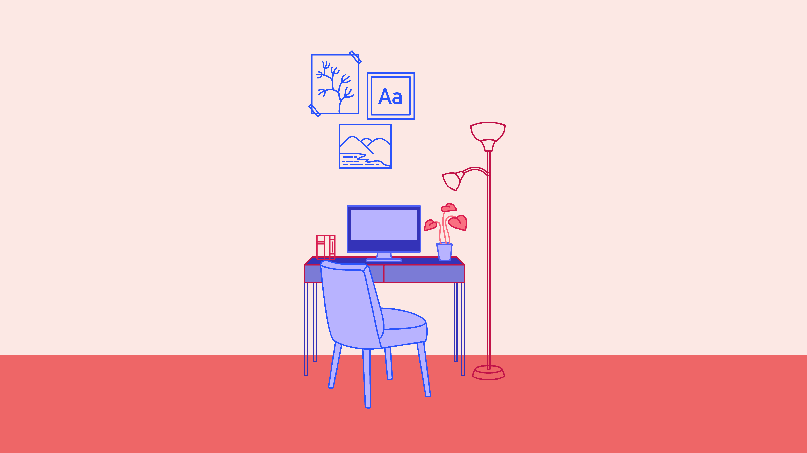

A Good place to study
Confined at home, the third and final trimester has taken students away from classrooms. This situation - new for both students and parents - requires reconverting the home into a space where learning. And it is not always easy, especially when several people live together and the house is not excessively spacious.
Are you having trouble studying? Are you not concentrating? Are you easily distracted by being at the dining room table when you should already know the contents? According to specialists, well-being and being efficient are the basic pillars to achieve a adequate study space.
Your room
The first advice from the experts is that the study place - probably a converted home space - is comfortable, that you are comfortable in it. It should also be quiet (as much as possible depending on where and with whom you live) and invite concentration .
“The spaces in the home have a value that we had not thought of before. A different value. If the study place is creative, pleasant and careful, it creates well-being and efficiency in itself. And if you are well, learning occurs because you are more receptive ”, says Teresa Bardera, head of the unit of the Institut de Ciències de l'Educació Josep Pallach of the University of Girona (UdG), a center dedicated to the permanent training of teachers and educational innovation.
It is advisable to delimit the work area: a table, for example, is already a limit. The chair must be comfortable and the back must be straight. In relation to the desk, it should reach the height of your waist, in such a way that when sitting down you can rest your elbows on the table without having to bend your shoulders. If you can't get to the table, you can always put a cushion.
Specialists recommend avoiding beds and sofas, as they invite you to doze off, so the work is not done. If you have to read, it can be done outdoors, such as on the terrace.